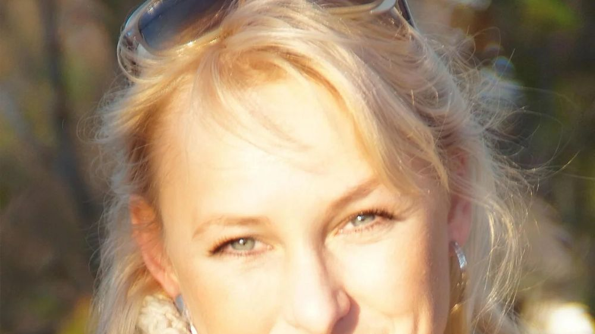

|
Physiotherapie · Hannover und Hemmingen
Ihr Termin
steht.
|
Liebe Frau Beispiel, hiermit bestätige ich Ihren Termin. Wenn Sie möchten, können Sie den Fragebogen auf meiner Website schon vorher ausfüllen. Dann haben wir beim ersten Termin mehr Zeit für Sie. Ich freue mich auf Sie. |
|
Ihr Termin · Beispiel
| Tag | Dienstag, 17. November 2026 | | Uhrzeit | 10:30 Uhr | | Ort | Hannover, Dieterichsstraße 25 |
| |
| Fragebogen ausfüllen → |
Bringen Sie gern bequeme Kleidung, ein großes Handtuch und, falls vorhanden, ärztliche Befunde oder eine Verordnung mit.

Herzliche Grüße
Sylvia Sroka |
|
Physiotherapie Sylvia Sroka
Dieterichsstraße 25 · 30159 Hannover · Telefon 0511 260 74 14
Physio Rosenpark · Berliner Straße 16 · 30966 Hemmingen · Telefon 0511 234 46 67
info@physio-sroka.de |
|